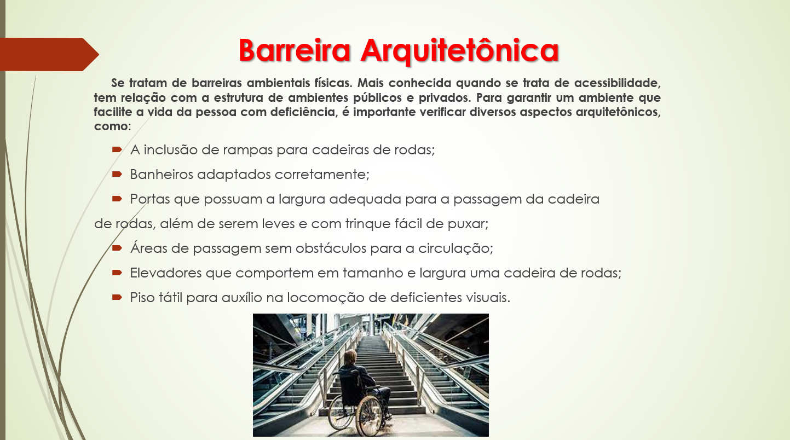
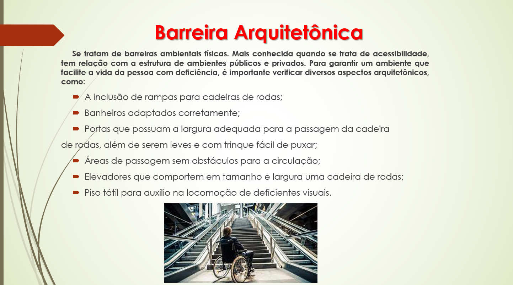

Acessibilidade X Inclusão:
 

A acessibilidade e a inclusão são dois princípios fundamentais que buscam garantir igualdade de oportunidades para todas as pessoas, independentemente de suas habilidades ou condições. A acessibilidade concentra-se na remoção de barreiras físicas e tecnológicas, enquanto a inclusão se preocupa em criar um ambiente onde todos se sintam valorizados e parte integrante da sociedade. Ambos são essenciais para promover a diversidade e a igualdade.
Estatuto do Idoso:
O Estatuto do Idoso é uma legislação essencial que visa proteger e promover os direitos das pessoas idosas em nossa sociedade. Criado para enfrentar desafios específicos relacionados ao envelhecimento. Nesta análise, exploraremos os principais pontos desse estatuto, destacando sua relevância na proteção dos direitos dos idosos e na promoção do respeito à dignidade e à qualidade de vida dessa parcela significativa da população.
Diversidade e Inclusão:

A diversidade e a inclusão são conceitos interligados que desempenham um papel essencial na construção de sociedades justas. A diversidade abrange diferenças individuais, enquanto a inclusão envolve a criação de ambientes onde todas as diferenças são valorizadas e respeitadas. Promover a diversidade e a inclusão enriquece experiências individuais, estimula a criatividade e a inovação, e contribui para uma sociedade mais equitativa e harmoniosa.
Desenvolvido por Pimentas LTDA.
Bruno Santos, Italo Mendes, João Pedro Lima, Kaio Amim, Matheus Mattos